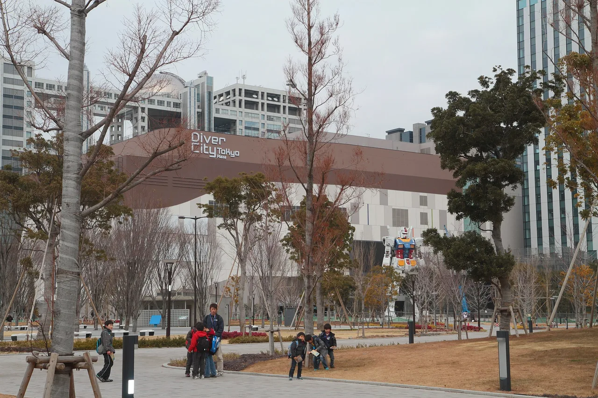
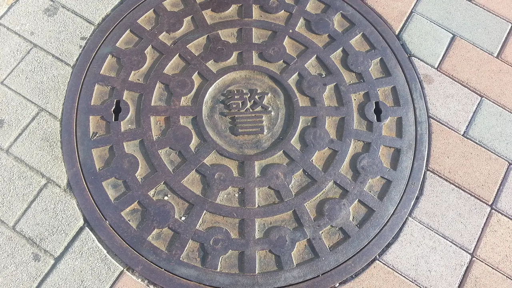

Penutup selokan Gundam di seluruh Jepang: panduan untuk penggemar
Tersebar di kota-kota Jepang terdapat penutup saluran yang sebenarnya bukan sekadar penutup saluran biasa — mereka adalah Gundam manholes (ガンダムマンホール). Masing-masing adalah penutup selokan besi cor yang nyata dan berfungsi, dicetak dengan mobile suit dari Mobile Suit Gundam, didonasikan oleh franchise kepada pemerintah kota setempat dan dipasangkan dengan kastil, pelabuhan, sawah, atau penjelajah terkenal di daerah tersebut. Panduan ini membahas apa itu proyek ini, bagaimana pasangan RX-78-2 dan Zeon bekerja, di mana penutup-penutup itu berada, dan cara memasukkan perburuan Gundam manhole nyata ke dalam perjalanan — ditambah bahasa Jepang yang akan Anda gunakan di sepanjang jalan.

Apa itu Proyek Gundam Manhole?
Proyek Gundam Manhole — bermerek G-Manhole — dijalankan oleh Gundam Project milik Bandai Namco Group bersama pemerintah daerah, menggunakan kekayaan intelektual Mobile Suit Gundam (Sunrise / Bandai Namco Filmworks). Proyek ini diumumkan pada 2020, dan penutup pertama dipasang di Odawara, Kanagawa, pada Agustus 2021. Odawara dipilih secara sengaja: kota ini adalah kampung halaman pencipta Gundam, Yoshiyuki Tomino.
Idenya mirip dengan Pokéfuta: ambil franchise yang dicintai, wujudkan sebagai seni manhole kota resmi, dan gunakan untuk menarik penggemar ke kota-kota yang mungkin tidak pernah mereka kunjungi. Penutup-penutup ini adalah manhole besi cor asli yang dipasang di jalan dan alun-alun umum — sehingga menemukannya berarti berjalan melalui lingkungan nyata, pelabuhan, dan halaman kastil, bukan taman hiburan.
Cara kerjanya: pasangan RX-78-2 dan Zeon
Ciri khas proyek ini adalah pasangan. Penutup biasanya didonasikan ke sebuah kota dua sekaligus: satu menampilkan RX-78-2 Gundam — suit pahlawan asli tahun 1979 — dan satu lagi menampilkan mobile suit dari Principality of Zeon, faksi antagonis (suit seperti Z'Gok, Gyan, Dom, atau Zaku II). Setiap penutup menempatkan mobile suit-nya di depan pemandangan lokal, landmark, atau keistimewaan daerah, sehingga desainnya unik untuk kota yang menerimanya.
Pasangan pertama, di Odawara, adalah contoh paling jelas dari formula ini: RX-78-2 berdiri dengan Kastil Odawara di belakangnya, sementara suit Zeon amfibi MSM-07S Z'Gok memegang ikan di pelabuhan nelayan — sebuah penghormatan untuk kehidupan pesisir kota tersebut. Kota-kota berikutnya mengikuti template yang sama dengan landmark mereka sendiri, yang menjadi setengah dari keseruannya: Anda tidak hanya mengoleksi robot, Anda mengoleksi potret diri sebuah kota yang digambar melalui Gundam.
Karena penutup-penutup ini didonasikan kepada kotamadya, mereka menjadi milik kota dan bagian dari infrastruktur publiknya. Itu juga berarti daftar terus bertambah setiap kali kota baru bergabung — tidak ada total nasional yang tetap dan diterbitkan dengan rapi, itulah mengapa situs resmi di bawah ini adalah satu-satunya sumber yang dapat diandalkan untuk mengetahui "apa yang ada sekarang."
Di mana menemukannya

Penutup-penutup di bawah ini adalah instalasi yang terdokumentasi. Detail unit hanya terverifikasi sepenuhnya untuk beberapa yang pertama; untuk sisanya, kami mendeskripsikannya secara umum dan mengarahkan Anda ke situs resmi, karena susunan mobile suit yang tepat dan lokasi baru berubah lebih cepat dari yang bisa diikuti blog mana pun.
| Kota | Prefektur · Wilayah | Unit / latar belakang | Catatan | Panduan gratis |
|---|---|---|---|---|
| Odawara | Kanagawa · Kanto | RX-78-2 (Kastil Odawara) + Z'Gok (pelabuhan nelayan)ガンダム・ズゴック | Instalasi pertama, Agustus 2021; kampung halaman sang pencipta | Kanagawa → |
| Sagamihara | Kanagawa · Kanto | RX-78-2 + wahana Hayabusa; Zaku II + pendarat SLIM | Tema JAXA / eksplorasi luar angkasa | Kanagawa → |
| Minamiuonuma | Niigata · Chubu | RX-78-2 (sawah Koshihikari); Gyan (Gunung Hakkai) | Dipasang Agustus 2024 | Niigata → |
| Katori | Chiba · Kanto | RX-78-2 dengan penjelajah Inō Tadataka; Gogg + kembang api Suigō | Dua lokasi taman | Chiba → |
| Komoro | Nagano · Chubu | Mobile suit seri Gundam | Gundam manhole pertama di Nagano | Nagano → |
| Mito | Ibaraki · Kanto | Mobile suit seri Gundam | Konfirmasi unit di situs resmi | Ibaraki → |
| Toyota | Aichi · Chubu | Mobile suit seri Gundam | Konfirmasi unit di situs resmi | Aichi → |
| Himeji | Hyogo · Kansai | Mobile suit seri Gundam | Dekat Kastil Himeji | Hyogo → |
| Hiraizumi | Iwate · Tohoku | Mobile suit seri Gundam | Kota Warisan Dunia UNESCO | Iwate → |
| (berbagai lokasi) | Hokkaido · Hokkaido | RX-78-2 + Dom dilaporkan | Kota-kota tepat: cek peta resmi | Hokkaido → |
Di luar empat baris pertama, anggap detail unit sebagai titik awal, bukan patokan pasti: situs resmi mencantumkan mobile suit yang tepat dan kota-kota yang saat ini memiliki penutup. Instalasi baru ditambahkan secara rutin, jadi kami menautkan sumber resmi daripada mencetak jumlah nasional tetap yang akan kedaluwarsa.
Proyek G-Manhole menyimpan daftar dan peta resmi yang selalu diperbarui dari setiap Gundam manhole yang terpasang, beserta mobile suit yang tepat di setiap lokasi. Karena penutup baru didonasikan ke kota-kota dari waktu ke waktu — dan karena jumlah resminya tidak tercantum dengan rapi di mana pun — kami menautkan situs proyek daripada mencetak total yang akan basi. Gunakan untuk mengonfirmasi unit dan merencanakan rute Anda, lalu kembali ke sini untuk konteks perjalanan dan frasa bahasa Jepang.
Cara mengoleksi: aplikasi Gundam Navi dan kartu manhole
Perburuan Gundam manhole sebenarnya adalah rute wisata yang tersamar. Penutup-penutup cenderung berada dekat stasiun, kastil, taman, dan pelabuhan, sehingga menghubungkan beberapa di antaranya akan membawa Anda menjelajahi bagian terbaik dari sebuah kota. Ada dua cara penggemar mengubah jalan-jalan itu menjadi koleksi:
- Kartu manhole kolektibel. Banyak kota yang berpartisipasi membagikan kartu manhole (マンホールカード) gratis — kartu seukuran saku bergambar penutup lokal, diberikan di kantor wisata atau balai kota terdekat. Gratis, tetapi titik distribusi dan jam operasional berbeda-beda per kota, jadi konfirmasi terlebih dahulu sebelum Anda jauh-jauh datang.
- Aplikasi Gundam Navi. Jepang memiliki aplikasi "Gundam Navi" dengan fitur check-in GPS: kunjungi penutup nyata, check-in di ponsel Anda, dan kumpulkan "suvenir" digital di aplikasi. Anggap ini sebagai bonus menyenangkan, bukan sistem hadiah yang dijamin — aplikasinya berorientasi Jepang, dan apa yang Anda buka bisa berubah.
- Konfirmasi unit dan lokasi di g-manhole.net terlebih dahulu. Hanya pasangan mobile suit dari beberapa kota pertama yang sudah pasti di sini; sisanya bisa berubah.
- Kartu manhole tidak dijamin. Tidak setiap kota Gundam menerbitkannya, dan titik pengambilan serta jam operasional berbeda-beda — cek sebelum memutar jalan.
- Ini adalah jalan umum. Jangan menghalangi lalu lintas, jalan masuk, atau pejalan kaki saat memotret penutup, dan jaga ketenangan di area perumahan.
Beberapa tautan di atas adalah tautan afiliasi. Kami mungkin mendapatkan komisi tanpa biaya tambahan bagi Anda. Kami hanya mencantumkan layanan yang kami gunakan sendiri.
Bahasa Jepang yang sebenarnya akan Anda gunakan
Berburu manhole adalah salah satu dari sedikit aktivitas wisata di mana Anda akhirnya berbicara dengan warga lokal — menanyakan kepada petugas kantor wisata di mana penutup Gundam berada cenderung membingungkan sekaligus menyenangkan mereka. Kosakata inti:
| Bahasa Jepang | Cara baca | Arti |
|---|---|---|
| マンホール | manhōru | manhole (penutup) — kata sehari-hari untuk penutup jalan ini |
| ガンダム | Gandamu | Gundam — franchise dan mobile suit pahlawannya, RX-78-2 |
| 機動戦士 | Kidō Senshi | "Mobile Suit" — awalan dalam Mobile Suit Gundam (機動戦士ガンダム) |
| 設置 | setchi | instalasi — digunakan dalam pengumuman resmi (新設置 = baru dipasang) |
| 寄贈 | kizō | donasi — cara penutup diberikan kepada setiap kota |
| ご当地 | gotōchi | "edisi lokal / keistimewaan lokal" — konsep di balik desain khusus per kota |
| マンホールカード | manhōru kādo | kartu manhole — kartu kolektibel gratis yang dibagikan beberapa kota |
| 聖地巡礼 | seichi junrei | "ziarah ke tempat-tempat suci" — istilah slang penggemar untuk mengunjungi lokasi yang terkait dengan franchise kesayangan |
Ingin kosakata ini melekat? Kuis pertempuran JLPT gratis melatih kosakata perjalanan dan budaya seperti ini dengan pengulangan berjarak.
Ingin merchandise-nya, bukan hanya manholenya?
Kota-kota Gundam dan toko hobi Jepang menjual kit model, figur, dan barang eksklusif yang sering kali tidak pernah keluar dari Jepang. Jika Anda mengoleksi dari luar negeri, layanan proxy buying dapat mengirimkannya ke seluruh dunia.
Lihat perbandingan jujur kami: cara membeli dari Jepang dengan Buyee vs ZenMarket →
Atau langsung ke ZenMarket (proxy buying, kirim ke seluruh dunia) →
Gundam manhole dapat dirangkai secara alami dengan perburuan berbasis lokasi lainnya: Pokéfuta (penutup manhole Pokémon) →, kartu manhole gratis →, dan ziarah anime (seichi junrei) →. Banyak penggemar mencentang beberapa sekaligus dalam satu prefektur.
Pertanyaan umum
T. Apa itu Proyek Gundam Manhole?
J. Ini adalah inisiatif resmi — bermerek "G-Manhole" — yang dijalankan oleh Gundam Project milik Bandai Namco Group bersama pemerintah daerah, memasang penutup manhole besi cor bertema Gundam di jalan-jalan umum di seluruh Jepang. Setiap penutup memadukan mobile suit dengan pemandangan atau budaya kota tuan rumah, dan penutup-penutup tersebut didonasikan kepada kota-kota.
T. Di mana Gundam manhole pertama dipasang?
J. Di Odawara, Kanagawa, pada Agustus 2021. Odawara dipilih karena merupakan kampung halaman pencipta Gundam, Yoshiyuki Tomino.
T. Gundam mana yang muncul di penutup-penutup itu?
J. RX-78-2 Gundam asli dari seri 1979 adalah desain pahlawan yang berulang. Biasanya dipasangkan dengan mobile suit Principality of Zeon — misalnya Z'Gok, Gyan, Dom, atau Zaku II — dengan setiap suit ditempatkan di depan landmark lokal.
T. Berapa banyak Gundam manhole yang ada, dan di mana?
J. Totalnya tidak tercantum dengan rapi di mana pun dan terus bertambah seiring kota-kota baru bergabung. Komunikasi resmi menyebut 14 penutup per 2023, dan program ini telah berkembang banyak sejak saat itu. Untuk daftar terkini dan lokasi tepat, cek situs resmi di g-manhole.net daripada mengandalkan jumlah tetap mana pun.
T. Bisakah saya mengoleksi sesuatu?
J. Ada dua cara. Banyak kota membagikan kartu manhole kolektibel gratis (マンホールカード) di kantor wisata atau balai kota terdekat, dan aplikasi "Gundam Navi" Jepang memungkinkan Anda check-in GPS di penutup nyata untuk mengumpulkan suvenir digital di dalam aplikasi. Keduanya berbeda-beda per lokasi, jadi konfirmasi apa yang tersedia secara lokal.
T. Siapa yang membuat dan membiayai penutup-penutup itu?
J. Diproduksi melalui Gundam Project milik Bandai Namco Group dan didonasikan kepada kotamadya yang berpartisipasi, yang kemudian memiliki dan merawatnya sebagai bagian dari infrastruktur publik. IP Gundam dimiliki oleh Sunrise / Bandai Namco Filmworks.
T. Bisakah sebuah kota meminta Gundam manhole?
J. Proyek ini telah menerima lamaran dari kota-kota, tetapi berdasarkan pemberitahuan situs resmi, lamaran untuk sementara ditangguhkan (募集一時停止) karena penumpukan. Cek g-manhole.net untuk status terkini sebelum berasumsi bahwa sebuah kota bisa melamar.